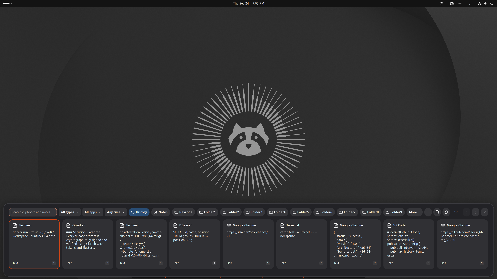
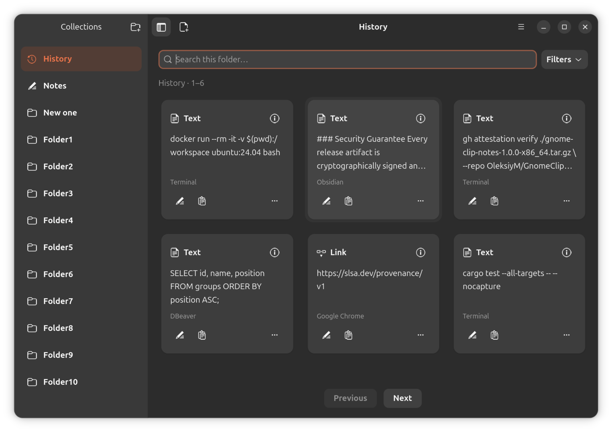
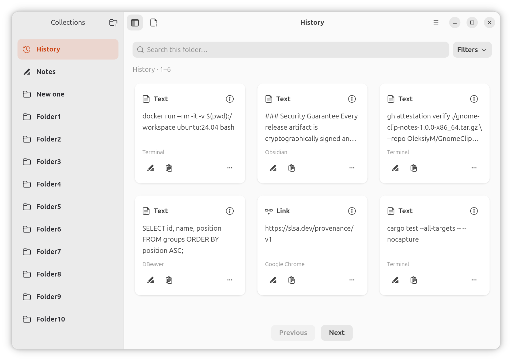
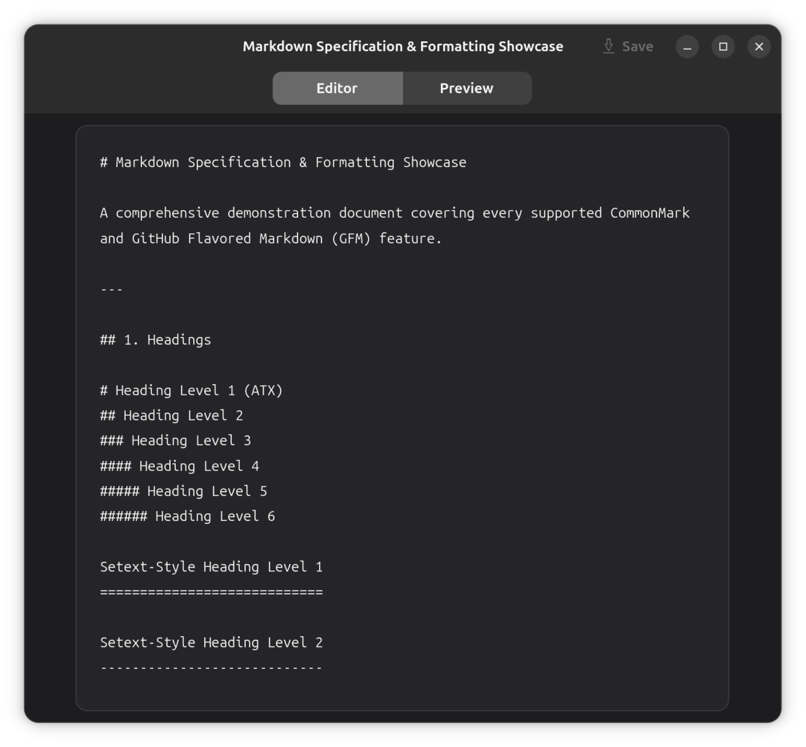
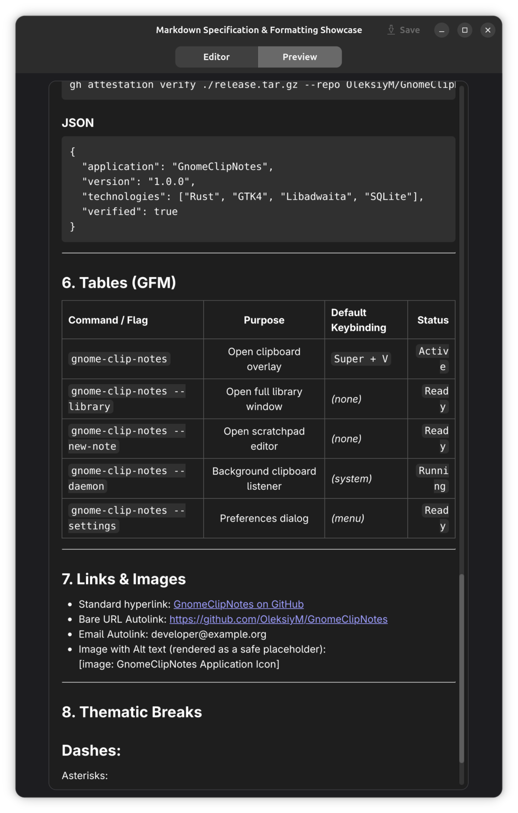
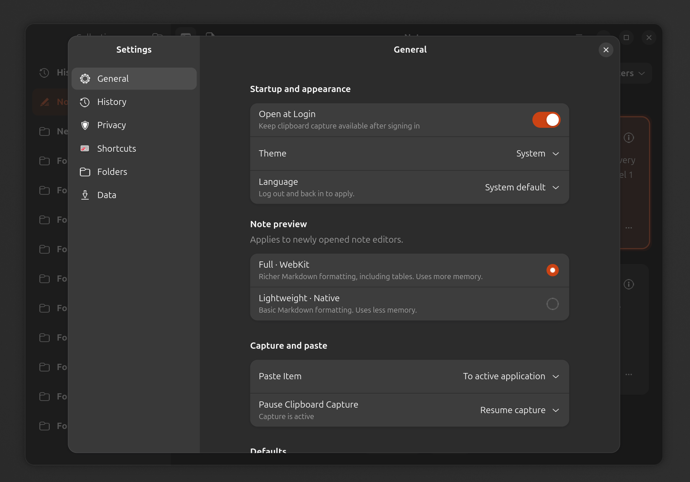
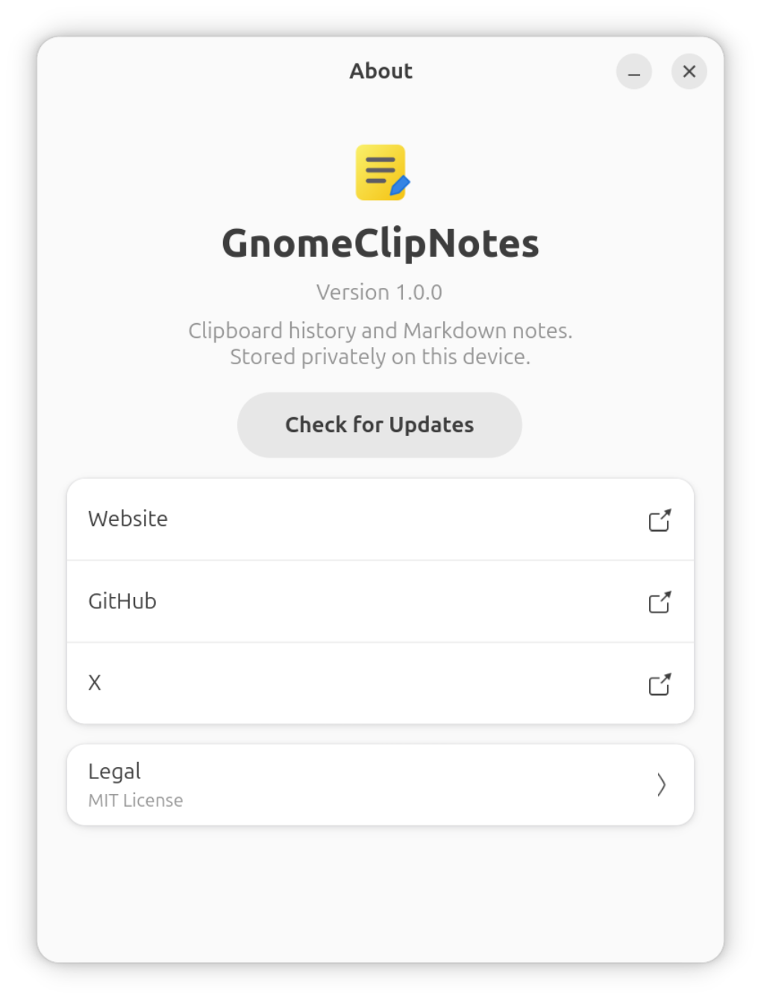
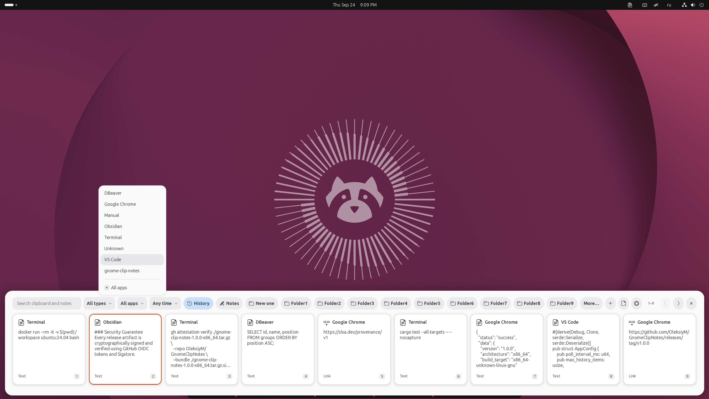

Find it again
Press Super+V for the clipboard overlay. Search, filter, move with arrow keys and paste with Enter. Keep your work in view.
GNOME · Wayland · Local first
A clipboard is a starting point. Turn useful fragments into notes, organize them into folders, and take them further as readable Markdown.
Installation guideExplore the project →
Built for Fedora 44 · x86_64 · GNOME on Wayland
Capture → Curate → Organize → Export → Develop → Reuse
Press Super+V for the clipboard overlay. Search, filter, move with arrow keys and paste with Enter. Keep your work in view.
Notes and custom folders stay separate from expiring History. Edit Markdown with a lightweight Native or rich Full preview.
Export selected collections as readable Markdown. Develop ideas in the tools you already use. No account or cloud service required.
Gallery
Clipboard overlay in GNOME Shell, native Library, and Markdown editing — one continuous workflow.
Real screenshots from the maintainer's Ubuntu 26.04.1 test session. Select any image to view it at full resolution.








Both install the same app. Standard installs it directly; Guided helps with dependencies, shutdown and recovery.
Both check SHA-256 and can verify signed provenance. Use the same path for updates; uninstall the previous method first if switching. Notes are kept by default.
Install the runtime dependencies, save and close editors, disable the extension and quit the app first. No Python, package installation, forced process termination or rollback.
curl -fsSL https://raw.githubusercontent.com/OleksiyM/GnomeClipNotes/main/install.sh | bashIf gh is missing or too old, Standard reports skipped provenance verification. Use --require-provenance to require it. Failed verification always stops installation.
Use this if you want a dependency offer, editor-aware shutdown and recovery of the previous program files on installation failure. Requires Python 3. Limited to explicitly listed systems; save and close editors first.
curl -fsSL https://raw.githubusercontent.com/OleksiyM/GnomeClipNotes/main/guided-install.sh | bashGuided stops if an installed gh is incompatible. It does not require gh when absent, unless --require-provenance is supplied.
Requirements, manual install and uninstall
Verification and inspect-first alternative · Release downloads
The x86_64 application has been used on Fedora 44 and Ubuntu 26.04.1. Archives are built on Fedora 44; other distributions still need compatible libraries. Ubuntu 22.04/24.04 are not verified binary targets. Starting with 1.1.0, the release workflow targets x86_64 and ARM64; ARM desktop use remains experimental. Download only assets actually listed in Releases.
Local SQLite storage. Plain text and Markdown. No automatic update requests. Capture exclusions help, but cannot recognize every secret: pause capture when needed.
{kind=link}
{kind=link}
{kind=link}
{kind=link}
{kind=link}
{kind=link}
{kind=link}
{kind=link}